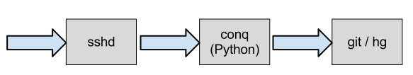
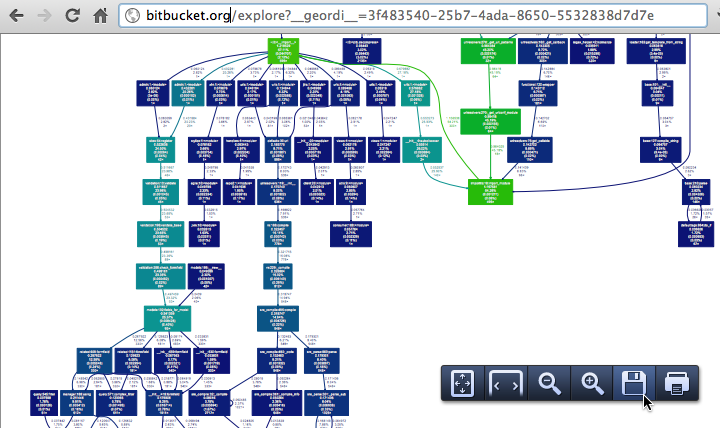

Continuous Introspection
(finding the slow bits)Wasted Cycles on Bitbucket
conqis our custom SSH shellconqimports Django ORM and Bitbucket codetakes ~1.41 seconds to start (spawns ~50/second)
Solution: no dependencies/imports and use plain SQL
16 times faster to start up (0.09s vs 1.41s)
60% load decrease on all web servers!
Slowness in Web Apps
-
slow SQL queries (or too many!)
-
lock contention:
- between threads
- database table/row locks
- file locks (git/hg)
-
excessive IO (disk/network)
-
evil regex:
r'^(a+)+$'
(Slowness is often context-dependent)
Consequences
- 503 — worker pools full
- 500 — if requests time out (Gunicorn SIGKILL)
The latter is best avoided as it destroys forensic evidence and leaves stale state (e.g. lock files)
Dogslow
-
Django middleware
-
emails tracebacks of slow requests
-
no performance penalty, safe on prod
Dogslow emailing a slow DAG traversal:
Subject: Slow Request Watchdog: GET http://bitbucket.org/alpine/voncount
From: notifications-noreply@atlassian.com
To: notifications-noreply@atlassian.com
Date: Tue, 29 May 2012 18:36:48 -0000
GET http://bitbucket.org/alpine/voncount
Thread ID: 140026041280256
Process ID: 22610
Started: 29-05-2012 18:36:23 UTC
File "bitbucket/apps/repo2/views.py", line 119, in repository
with repo.history.walk() as walker:
File "python2.7/contextlib.py", line 17, in __enter__
return self.gen.next()
File "site-packages/orochi/git.py", line 888, in walk
with self._revlist() as f:
File "python2.7/contextlib.py", line 17, in __enter__
return self.gen.next()
File "site-packages/orochi/git.py", line 822, in _revlist
stdout, stderr = p.communicate(input=input)
File "python2.7/subprocess.py", line 754, in communicate
return self._communicate(input)
File "python2.7/subprocess.py", line 1312, in _communicate
stdout, stderr = self._communicate_with_poll(input)
File "python2.7/subprocess.py", line 1366, in _communicate_with_poll
ready = poller.poll()
Git repo had 6707 loose object files.
git-gc reduced DAG traversal from 35 sec to 0.1 sec
Meet django-geordi

-
selectively profile individual requests
-
add "
?__geordi__" to any URL
(accessible to admin users only) -
produces pdf call graph

-
runs outside the worker pool without timeouts (celeryd)
Interruptingcow
-
timebox chunks of code:
import re from interruptingcow import timeout try: with timeout(20.0, RuntimeError): # evil regex: re.match(r'(a+)+$', 'aaaaaaaaaaaaaaaaaaaaaaaa!') except RuntimeError: print 'Interrupted' -
raises a
RuntimeErrorin the worker -
fail in a controlled manner
-
ensure proper cleanup (db, lock files)
Nested timeouts
from interruptingcow import timeout
class Outer(RuntimeError):
pass
class Inner(RuntimeError):
pass
try:
with timeout(20.0, Outer):
try:
with timeout(1.0, Inner):
# some expensive operation
try_the_expensive_thing()
except Inner:
do_the_cheap_thing_instead()
except Outer:
print 'Program as a whole failed to return in 20 secs'
Summary
-
Dogslow — tracebacks of slow requests used by Instagram :)
-
Geordi — profile production environments
-
Interruptingcow — prevent slowness and fail gracefully